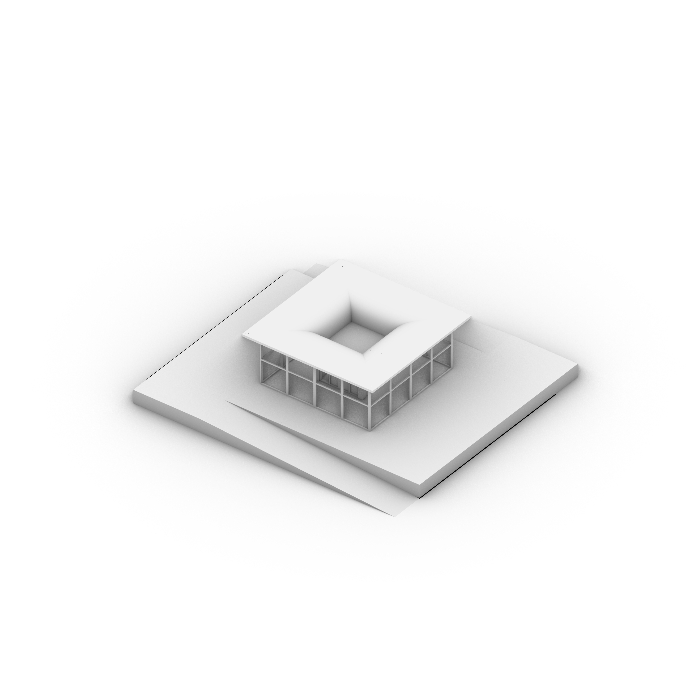

极端环境·宜居营造
——钛合金曲面自保障建筑BIM智能设计与建造
01120305 张珺怡
1. 开题报告
1.1 场地调研报告
1.2 课题难点和关键问题
1.3 案例研究
1.1 场地调研报告
班戈县隶属于西藏自治区那曲市，海拔：4697 米，位于西藏自治区中部、那曲市南部，地处藏北高原，属高原亚寒带季风半干旱气候，毗邻6 个区、县，总面积28430 平方千米。
那曲市班戈县佳琼镇央木布村背山面草原，气温常年底下、降水量低、刮风天较多。本地居民主要以畜牧业及商业为主，有两个餐馆（兼商店）。目前村庄的整体家户有一百多户，大部分较为集中，少部分分布零散，零散住户少则相距两公里，多则相距二十公里，人口数量将近600 人左右。村内人口以老人为主，人口去向主要为：小孩外出上学，中年人外出务工。从班戈县到此村庄有将近两个小时车程，道路情况为半柏油路半土路，目前柏油路的维修进度止步于此村庄，并且公共设施尚不完善，村庄还未通电，白天使用太阳能光伏板发电，夜间以发电机发电为主。
降雨量情况：降雨主要集中在7 月到9 月间（将近50 天），降雨量非常少，降雨情况多为当天下雨，当天干。 降雪情况：降雪主要集中在10 月到次年5 月间，基本都为小雪，偶尔会有大雪天气，一般一年内有10 到15 次的降雪，但是近几年的降雪量越来越少，大概一年5 到10 次降雪，且都为小雪。 土壤情况：村庄大面积覆盖的是草原（属于保护范围），村内土地表层为砂石，但是覆盖率较低，砂石覆盖在从表层到土地内部将近10 到15 厘米左右，以下为沙土层，但是由于气温较低，此沙土层较为坚固。 气温情况：6 月到8 月气温相对较高，基本保持在0 摄氏度左右，8 月至次年5 月持续降温，基本保持在0 摄氏度以下。 刮风情况：刮风主要集中在12 月到次年5 月期间，上午到中午刮风较小，下午至次日早晨持续刮大风。


1.2 课题难点和关键问题
高原环境适应性
气候影响： 高原地区低氧、低温、强紫外线、昼夜温差大等极端气候条件对建筑材料和结构性能的影响。 高原环境下混凝土的养护难度大，钛合金的耐腐蚀性和耐久性要求高。
施工难度： 高原地区人工施工效率低，劳动力成本高，对自动化建造技术的依赖性强。 高原地区运输条件差，大型设备和材料的运输与安装难度大。
钛合金与超高性能混凝土组合结构的设计与优化
材料性能匹配： 钛合金与超高性能混凝土的物理性能（如热膨胀系数、弹性模量）差异大，如何实现两种材料的高效结合。 组合结构的连接节点设计，确保结构整体性和稳定性。
结构性能优化： 曲面建筑的结构受力复杂，如何通过性能模拟优化结构设计，确保其在高风压、地震等极端条件下的安全性。 组合结构的轻量化设计，减少材料用量同时保证强度。
智能建造技术的应用
自动化与智能化施工： 高原环境下，如何实现施工过程的自动化（如3D打印、机器人施工）以减少人工依赖。 智能建造设备的适应性，确保其在高原低氧、低温环境下的正常运行。
BIM技术的深度应用： 如何利用BIM技术实现从设计到施工的全流程协同，提高建造效率。 BIM模型与智能建造设备的无缝对接，实现设计与施工的一体化。
自保障宜居环境设计
能源自给自足： 高原地区可再生能源（如太阳能、风能）的波动性大，如何设计稳定的能源供应系统。 建筑与可再生能源系统的一体化设计，确保能源高效利用。
室内环境控制： 高原环境下，如何通过被动式设计（如保温、通风）和主动式技术（如空调、加湿）实现室内环境的舒适性。 室内空气质量的控制，特别是在高原低氧环境下。
性能模拟与优化
结构性能模拟： 曲面建筑的复杂受力分析，如何通过有限元分析（FEA）等工具优化结构设计。 高原环境下，风荷载、雪荷载、地震作用对建筑的影响模拟与应对策略。
能源性能优化： 建筑能源消耗的模拟与优化，确保能源系统的高效运行。 可再生能源系统的性能模拟，优化其与建筑的集成设计。
景观与社区环境设计
高原生态适应性： 高原地区植被稀少，如何设计景观以适应当地生态环境，同时提升社区宜居性。 水资源的管理与利用，特别是在高原干旱环境下。
多学科交叉综合应用
建筑技术与工程技术的结合： 如何将建筑设计与结构工程、能源工程、环境工程等多学科知识结合，实现综合优化。
本科生知识储备不足： 对BIM技术、智能建造、性能模拟等技术的应用不熟悉，需要快速学习并掌握。 高原环境下的建筑设计经验缺乏，需要通过调研和学习弥补。
设计成果的实践指导性
设计成果的可实施性： 设计方案需要具备实际可操作性，能够指导真实项目的建造。 设计成果需要考虑到施工条件、材料供应、设备可用性等现实因素。
高原环境下的施工管理： 如何通过设计优化减少施工难度，提高施工效率。 施工过程中的质量控制与安全管理，特别是在高原环境下。
1.3 案例研究
南极科考站-罗斯海新站

“它并不是一个简单的建筑，它实际上要综合考虑它的基础设施，比如说道路、码头、能源、水处理，包括通信，这些都是作为基础设施要考虑的。另外，建筑本身的功能，像办公、科研、实验、仓库储存、人员生活、人员的休闲，所有的这些交往活动都要考虑到内。实际上作为一个小小的考察站，它实际上是一个微缩的科学城。”


作为具有高度预制装配率的建筑，罗斯海新站位于南极罗斯海恩克斯堡岛，气候极端，在这样的环境中，建设必须抓紧南极夏季的两个月窗口，完成全部工作，并且南极建筑需要着重考虑风荷载和积雪影响。在交通运输不便、气候寒冷的情况下，建筑的设计精度必须非常高，且同时要协同各种基础设施的建设，包括停机坪、道路、水、电、废物处理、通信、能源等等。建筑需要充分考虑极地高寒、强风、积雪、紫外线辐射等极端环境要素。因此该建筑具有以下技术特点：
主体结构：
建筑主体采用钢结构，主体建筑位于完整基岩之上，长轴保持与主导风向一致，底层架空，通过预应力岩石抗拔锚杆将建筑牢牢地锚固在地面。
室内设计：主楼内部采用了模块化设计，模块化率达到45%，主要包括16个越冬宿舍单元、26个度夏宿舍单元以及各类办公室、实验室等。模块中大部分室内固定家具、设备及管线都在工厂预制，大大减少现场工作量。
考虑到机械振动、噪声干扰、空气质量、封闭性环境的心理影响等，建筑针对性地设计了解决方案：以缓解考察队员心理压力为例，建筑内装采用明快的色调、温暖的木质表面；设置植物温室，屋内变得绿意盎然；餐厅落地窗面向海湾，队员可以欣赏绝佳的南极风光。
能源性能：新站以被动式建筑技术应对极端环境，采用可再生能源和传统能源相结合的能源系统，优先采用风能和太阳能等清洁能源。此外，新站根据功能分区的使用特点，分别对越冬、度夏区域实行独立能源供应，根据工况状态灵活设置和调节。度夏宿舍及海洋实验室在冬季无人状态下仅维持值班温度，降低能耗。
安全设计：采用轻质高强的建筑技术与材料，可以抵抗零下60摄氏度的超低温和海岸环境的强腐蚀；智慧火眼消防系统，10秒内精准识别，快速响应。
高效建设：约100名建设队员、约9300吨建设物资，人员、材料和机械的协同是建设过程中的又一大挑战。对此，考察队多次专题讨论、修改完善卸货方案，按照“先生活保障、后施工生产；先主楼、后后勤”的原则，将卸货任务细化到每一环节。开展大规模建设物资卸运和人员登陆工作的同时，还将开展新站钢结构搭建。
为了缩短现场的工期，同时减少建筑垃圾，罗斯海新站所有钢结构都在国内加工成模块现场拼装，并在徐州完成了预拼装。
2. 设计阶段性成果
2.1 场地分析和设计
2.2 建筑设计
2.3 建筑空间展示
空间化 场地化 建筑化 结构化 构件化 信息化
2.1 场地分析和设计
场地选址为原村委会房屋处，设计阶段预计将拆除。场地现状如下图：
根据村庄现状，场地外及场地内的运输流线分析如下图：
场地rhino建模如下图：


2.2 建筑设计
草图阶段方案
建筑基底，主体采用1m*1m*1.2m的UHPC空心立方体块吊装拼合而成。
场地设计需要同时考虑到建筑建造施工区域和生活区域，生活区域短期建造需要，后续可拆除改造为庭院空间。


问题：旋转降低结构效率；数字化程度不足；
BIM建模阶段方案
“BASE”构件组成：
“CORE”构件组成：
“屋面”构件组成：


“外围护”构件组成：


2.3 建筑空间展示

CORE内部透视
室内透视
3. 项目管理及预期发展
3.1 项目管理
3.2 预期发展

3.2 预期发展
进一步深化BIM建模;
深化建筑自保障能源供应设计；
......